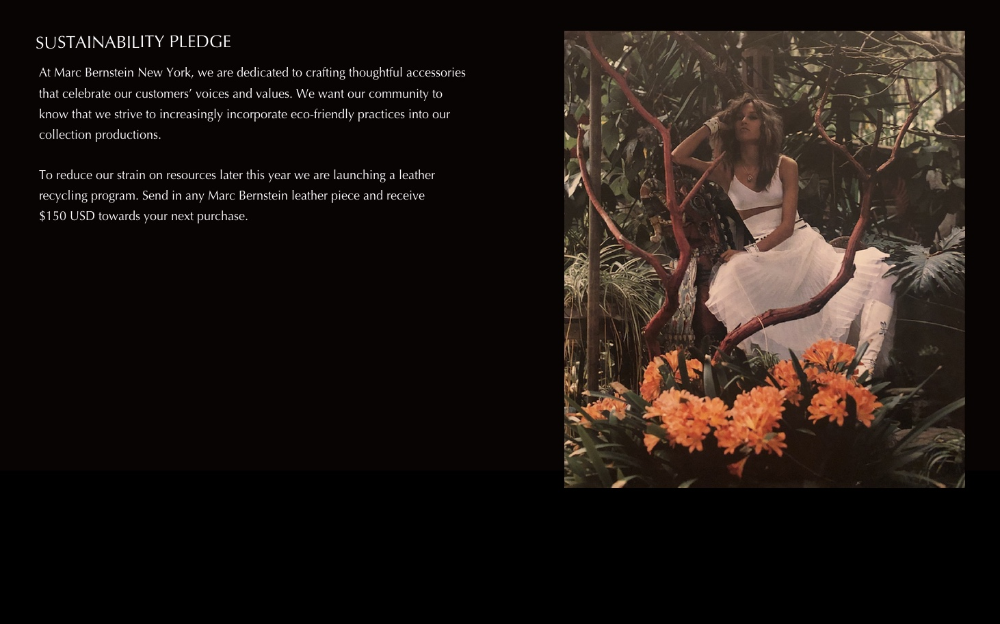

- OUR PROMISE
Accessories are more than just objects, they are extensions of our purest selves. The
accessories we choose to live our lives in open us up to the world; they serve as our
armors, our first points of contact and our olive branches. At Marc Bernstein New York,
we believe everyone has a story and every accessory can help them tell it.
Through a distinctively fluid approach to design, our pieces seamlessly integrate into
every facet of your lifestyle. From day to night, city to city, work to play, our collections
embolden you to share your story one piece at a time.
Our collections will continue to craft thoughtful, detailed designs that will inspire you
to celebrate your passions and express your voice. Designs that go beyond the product
itself and create a bond between those who wear it.
-

------
- OUR SPIRIT
Grounded in timeless craftmanship, inspired by global connectivity, and elevated by
refined design.
Since 2002, artist and master craftsman Marc Bernstein has committed his talents to
designing an ever-evolving collection of urban-chic jewelry and leather goods suited
for the cultural sophisticates and urban tastemakers in us all.
Although Marc Bernstein New York produces highly individualized pieces, each
collection is anchored by Marc’s supple, luxurious leathers and custom hardware
colors, including Blond Gold and Matte Black.
Drawing artistic inspiration from natural elements and antiquities from communities
across the globe, Marc Bernstein has built an unshakeable reputation for designing
pieces that cross borders, surpass time periods,and transcend trends.
-

- OUR STORY
Marc Brnstein New York was officially created in 2002. Then an assistant to elite
photographers (including Patrick Demarchelier) Marc began to teach himself the art
of leather craft when he struggled to find accessories that reflected his personal
style and met his high quality standards. After producing his first leather cuff bracelet,
word soon got out that Marc Bernstein was fashioning a new design revolution from
New York’s own Lower East Side.
Over the next 17 years Marc continued to expand his collection to include belts,
handbags, necklaces, keychains, and wallets. As Marc’s artisanship has deepened, so
too has his desire to infuse multiple perspectives and stories into his work.
Marc Bernstein New York collections have been featured in Vogue and sold in
Barneys CO-OP, Selfridges, and Harvey Nichols.
When he’s not creating in his New York studio, Marc travels the world, challenging
himself to infuse new elements and cultural traditions into his work.
-

- SUSTAINABILITY
At Marc Bernstein New York, we are dedicated to crafting thoughtful accessories
that celebrate our customers’ voices and values. We want our community to
know that we strive to increasingly incorporate eco-friendly practices into our
collection productions.
To reduce our strain on resources later this year we are launching a leather
recycling program. Send in any Marc Bernstein leather piece and receive
$150 USD towards your next purchase.
- 